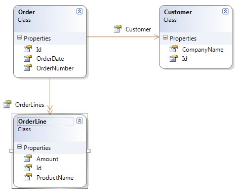

In this article I want to discuss the lazy loading mechanism provided by NHibernate. It is recommended for maximum flexibility to define all relations in your domain as lazy loadable. This is the default behavior of NHibernate since version 1.2. But this can lead to some undesired effects if querying your data. Let's discuss these effects and how to avoid them. Term Paper
AND Research
Paper
In my previous posts I showed how to prepare your system for NHibernate and how to implement a first NHibernate base application. This post is based on those two articles. Thesis AND Dissertation AND Essay
The Domain
Let's first define a simple domain. It shows part of an order entry system. I keep this model as simple as possible (a real domain model would be more complex) but it contains all aspects we want to discuss in this post. Below is the class diagram of our model

We have an order entity which can be placed by a customer entity. Each order can have many order line entities. Each of the three entity types is uniquely identified by a property Id (surrogate key).
The Mapping Files
We have to write one mapping file per entity. It is recommended that you always have one mapping per file. Don't forget to set the Build Action of each mapping file to Embedded Resource. People often tend to forget it and the subsequent errors raised by NHibernate are not always obvious. Also do not forget to give the mapping files the correct name, that is *.hbm.xml where * denotes the placeholder for the entity name.
The mapping for the Order entity might be implemented as follows
<?xml version="1.0" encoding="utf-8" ?>
<hibernate-mapping xmlns="urn:nhibernate-mapping-2.2"
assembly="LazyLoadEagerLoad"
namespace="LazyLoadEagerLoad.Domain">
<class name="Order" table="Orders">
<id name="Id">
<generator class="guid"/>
</id>
<property name="OrderNumber"/>
<property name="OrderDate"/>
<many-to-one name="Customer" />
<set name="OrderLines" cascade="all-delete-orphan" >
<key column="OrderId"/>
<one-to-many class="OrderLine"/>
</set>
</class>
</hibernate-mapping>
Analogous you can implement the mappings for the Customer entity
<?xml version="1.0" encoding="utf-8" ?>
<hibernate-mapping xmlns="urn:nhibernate-mapping-2.2"
assembly="LazyLoadEagerLoad"
namespace="LazyLoadEagerLoad.Domain">
<class name="Customer">
<id name="Id">
<generator class="guid"/>
</id>
<property name="CompanyName"/>
</class>
</hibernate-mapping>
and finally the mapping for the OrderLine entity.
<?xml version="1.0" encoding="utf-8" ?>
<hibernate-mapping xmlns="urn:nhibernate-mapping-2.2"
assembly="LazyLoadEagerLoad"
namespace="LazyLoadEagerLoad.Domain">
<class name="OrderLine">
<id name="Id">
<generator class="guid"/>
</id>
<property name="Amount"/>
<property name="ProductName"/>
</class>
</hibernate-mapping>
Testing the Mapping
To test the mapping we use the following test method
using LazyLoadEagerLoad.Domain;
using NHibernate.Cfg;
using NHibernate.Tool.hbm2ddl;
using NUnit.Framework;
namespace LazyLoadEagerLoad.Tests
{
[TestFixture]
public class GenerateSchema_Fixture
{
[Test]
public void Can_generate_schema()
{
var cfg = new Configuration();
cfg.Configure();
cfg.AddAssembly(typeof(Order).Assembly);
new SchemaExport(cfg).Execute(false, true, false, false);
}
}
}
First we create a new instance of the NHibernate Configuration class and tell it to configure itself. Since we don't provide any explicit configuration here in the code NHibernate looks out for an adequate configuration file. I have included such a file (called hibernate.cfg.xml) in my project. Please consult this previous post for further details about the configuration file.
Testing the Loading Behavior of NHibernate
Defining a base class for our tests
To avoid repetitive task (DRY principle) we implement the following base class.
using LazyLoadEagerLoad.Domain;
using NHibernate;
using NHibernate.Cfg;
using NHibernate.Tool.hbm2ddl;
using NUnit.Framework;
namespace LazyLoadEagerLoad.Tests
{
public class TestFixtureBase
{
private Configuration _configuration;
private ISessionFactory _sessionFactory;
protected ISessionFactory SessionFactory
{
get { return _sessionFactory; }
}
[TestFixtureSetUp]
public void TestFixtureSetUp()
{
_configuration = new Configuration();
_configuration.Configure();
_configuration.AddAssembly(typeof(Customer).Assembly);
_sessionFactory = _configuration.BuildSessionFactory();
}
[TestFixtureTearDown]
public void TestFixtureTearDown()
{
_sessionFactory.Close();
}
[SetUp]
public void SetupContext()
{
new SchemaExport(_configuration).Execute(false, true, false, false);
Before_each_test();
}
[TearDown]
public void TearDownContext()
{
After_each_test();
}
protected virtual void Before_each_test()
{ }
protected virtual void After_each_test()
{ }
}
}
When the test fixture is started, the base class configures NHibernate and creates a session factory (TestFixtureSetUp). When the whole test fixture is ended the session factory is closed (TestFixtureTearDown).
Before each test in the fixture is run the database schema is (re-) created and the virtual Before_each_test method is called. After each test in the fixture is finished the virtual After_each_test method is called. The two virtual methods can (but must not necessarily) be overridden in a child class.
All our test fixtures we implement will derive from this base class.
Filling the database with test data
To be able to test the loading behavior of NHibernate we need some test data in our database. We create this test data every time a test is run (just after the database schema is re-created). We add a new class Order_Fixture to our test project and inherit from the TestFixtureBase base class. Then we override the Before_each_test method and call a helper method which creates our initial data. We create just the absolute minimum of data we need (again -->DRY). That is: one customer placing one order with two order lines.
using System;
using LazyLoadEagerLoad.Domain;
using NHibernate;
using NHibernate.Criterion;
using NHibernate.SqlCommand;
using NUnit.Framework;
using Order=LazyLoadEagerLoad.Domain.Order;
namespace LazyLoadEagerLoad.Tests
{
[TestFixture]
public class Order_Fixture : TestFixtureBase
{
private Order _order;
protected override void Before_each_test()
{
base.Before_each_test();
CreateInitialData();
}
private void CreateInitialData()
{
// create a single customer and an order with two order lines for this customer
var customer = new Customer {CompanyName = "IBM"};
var line1 = new OrderLine {Amount = 5, ProductName = "Laptop XYZ"};
var line2 = new OrderLine {Amount = 2, ProductName = "Desktop PC A100"};
_order = new Order
{
OrderNumber = "o-100-001",
OrderDate = DateTime.Today,
Customer = customer
};
_order.OrderLines.Add(line1);
_order.OrderLines.Add(line2);
using (ISession session = SessionFactory.OpenSession())
using (ITransaction transaction = session.BeginTransaction())
{
session.Save(customer);
session.Save(_order);
transaction.Commit();
}
}
}
}
The CreateInitialData method is run before each test. With this we guarantee that each test is side effects free.
Verifying the default behavior - Lazy Loading
When loading an order entity from database the default behavior of NHibernate is to lazy load all associated objects of the order entity. Let's write a test to verify this. For the verification we use a utility class provided by NHibernate (NHibernateUtil) which can test whether an associated object or object collection is initialized (i.e. loaded) or not. The class can also force the initialization of an un-initialized relation.
[Test]
public void Customer_and_OrderLines_are_not_loaded_when_loading_Order()
{
Order fromDb;
using (ISession session = SessionFactory.OpenSession())
fromDb = session.Get<Order>(_order.Id);
Assert.IsFalse(NHibernateUtil.IsInitialized(fromDb.Customer));
Assert.IsFalse(NHibernateUtil.IsInitialized(fromDb.OrderLines));
}
The test succeeds and NHibernate generates SQL similar to this one
SELECT order0_.Id as Id0_0_,
order0_.OrderNumber as OrderNum2_0_0_,
order0_.OrderDate as OrderDate0_0_,
order0_.CustomerId as CustomerId0_0_
FROM Orders order0_
WHERE order0_.Id='15bca5b3-2771-4bee-9923-85bda66318d8'
Now we have a problem: If we want to access the order line items (after the session has been closed) we get an exception. Since the session is closed NHibernate cannot lazily load the order line items for us. We can show this behavior with the following test method
[Test]
[ExpectedException(typeof(LazyInitializationException))]
public void Accessing_customer_of_order_after_session_is_closed_throws()
{
Order fromDb;
using (ISession session = SessionFactory.OpenSession())
fromDb = session.Get<Order>(_order.Id);
// trying to access the Customer of the order, will throw exception
// Note: at this point the session is already closed
string name = fromDb.Customer.CompanyName;
}
Note: the above test only succeeds if the method throws the expected exception of type LazyInitializationException. And this is just what we want to show!
Another problem is the n+1 select statements problem. If we access the order line items after loading the order we generate a select statement for each line item we access. Thus if we have n line items and want to access them all we generate one select statement for the order itself and n select statements for all line items (result: n+1 select statements). This can make our data fetching rather slow and put a (unnecessary) burden onto our database.
We can simulate this behavior with this test method
[Test]
public void Show_n_plus_1_select_behavior()
{
using (ISession session = SessionFactory.OpenSession())
{
var fromDb = session.Get<Order>(_order.Id);
int sum = 0;
foreach (var line in fromDb.OrderLines)
{
// just some dummy code to force loading of order line
sum += line.Amount;
}
}
}
NHibernate will generate SQL similar to the following
SELECT order0_.Id as Id3_0_,
order0_.OrderNumber as OrderNum2_3_0_,
order0_.OrderDate as OrderDate3_0_,
order0_.Customer as Customer3_0_
FROM Orders order0_
WHERE order0_.Id='5b2dbcb7-d0bf-4c53-86aa-8cd40cb5061a'
SELECT orderlines0_.OrderId as OrderId1_,
orderlines0_.Id as Id1_,
orderlines0_.Id as Id4_0_,
orderlines0_.Amount as Amount4_0_,
orderlines0_.ProductName as ProductN3_4_0_
FROM OrderLine orderlines0_
WHERE orderlines0_.OrderId='5b2dbcb7-d0bf-4c53-86aa-8cd40cb5061a'
This time we have been lucky! NHibernate has automatically generated an optimized query for us and has loaded the 2 order line items in one go. But this is not always the case! Imagine having a collection with several 100 items and you only need to access one or two of them. It would be a waste of resources to always load all items.
But fortunately we have a solution for these kind of problems with NHibernate. It's called eagerly loading.
Eagerly loading with the NHibernateUtil class
If you know you need have access to related objects of the order entity you can use the NHibernateUtil class to initialize the related objects (that is: to fetch them from the database). Have a look at this test methods
[Test]
public void Can_initialize_customer_of_order_with_nhibernate_util()
{
Order fromDb;
using (ISession session = SessionFactory.OpenSession())
{
fromDb = session.Get<Order>(_order.Id);
NHibernateUtil.Initialize(fromDb.Customer);
}
Assert.IsTrue(NHibernateUtil.IsInitialized(fromDb.Customer));
Assert.IsFalse(NHibernateUtil.IsInitialized(fromDb.OrderLines));
}
[Test]
public void Can_initialize_order_lines_of_order_with_nhibernate_util()
{
Order fromDb;
using (ISession session = SessionFactory.OpenSession())
{
fromDb = session.Get<Order>(_order.Id);
NHibernateUtil.Initialize(fromDb.OrderLines);
}
Assert.IsFalse(NHibernateUtil.IsInitialized(fromDb.Customer));
Assert.IsTrue(NHibernateUtil.IsInitialized(fromDb.OrderLines));
}
With this utility class you can initialize single objects as well as collection of objects. In each case NHibernate will send 2 select statements to the database. One to select the order and one to initialize the related object(s).
Eagerly loading with HQL
If you know that you want to load all order items of a given order then you can tell NHibernate to do so and eagerly load all order lines together with the order in one go. The following test method shows how you can formulate a HQL query which not only loads the order but also the associated customer and order lines.
[Test]
public void Can_eagerly_load_order_aggregate_with_hql_query()
{
Order fromDb;
using (ISession session = SessionFactory.OpenSession())
{
string sql = "from Order o" +
" inner join fetch o.OrderLines" +
" inner join fetch o.Customer" +
" where o.Id=:id";
fromDb = session.CreateQuery(sql)
.SetGuid("id", _order.Id)
.UniqueResult<Order>();
}
Assert.IsTrue(NHibernateUtil.IsInitialized(fromDb.Customer));
Assert.IsTrue(NHibernateUtil.IsInitialized(fromDb.OrderLines));
}
The resulting sql generated by NHibernate is then similar to this one
select order0_.Id as Id0_0_,
orderlines1_.Id as Id1_1_,
customer2_.Id as Id2_2_,
order0_.OrderNumber as OrderNum2_0_0_,
order0_.OrderDate as OrderDate0_0_,
order0_.CustomerId as CustomerId0_0_,
orderlines1_.Amount as Amount1_1_,
orderlines1_.ProductName as ProductN3_1_1_,
customer2_.CompanyName as CompanyN2_2_2_,
orderlines1_.OrderId as OrderId0__,
orderlines1_.Id as Id0__
from Orders order0_
inner join OrderLine orderlines1_ on order0_.Id=orderlines1_.OrderId
inner join Customer customer2_ on order0_.CustomerId=customer2_.Id
where order0_.Id='409ebd99-3206-459b-bfed-6df989284da9'
NHibernate has created an SQL select statement which joins the 3 tables involved, namely Orders, Customer andOrderLine. The returned (flat) set of records is then used by NHibernate to build up the object tree with the order entity as a root.
Aggregates in the Domain
DDD defines the concept of aggregates. A short definition of an aggregate is "A cluster of associated objects that are treated as a unit for the purpose of data changes.". An aggregate always has a root. In this context we can define the following aggregate in our domain

The order entity is the root and the order lines belong to the aggregate (can be regarded as children of the root). When creating a new order or changing an existing one we only want to modify either the order itself or its order lines. We certainly do not want to change the customer entity because this would be a completely different use case and does not belong to the order management use case.
So, when dealing with aggregates we often want to load the complete aggregate in one go! This is the perfect example for using eager loading techniques.
Summary
I have introduced the concept of lazy loading as provided by NHibernate. I have discussed the consequences and shown how to avoid negative side effects by using different techniques of so called eager loading.